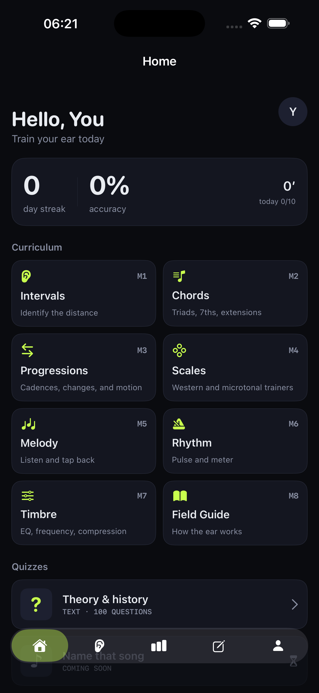
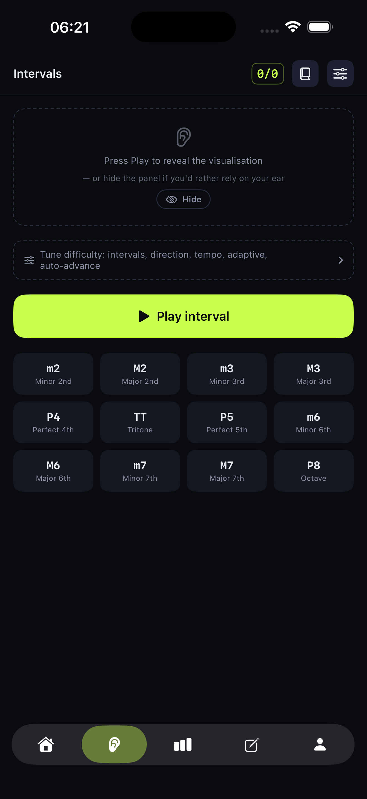
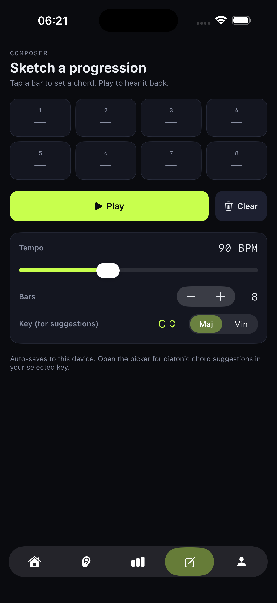
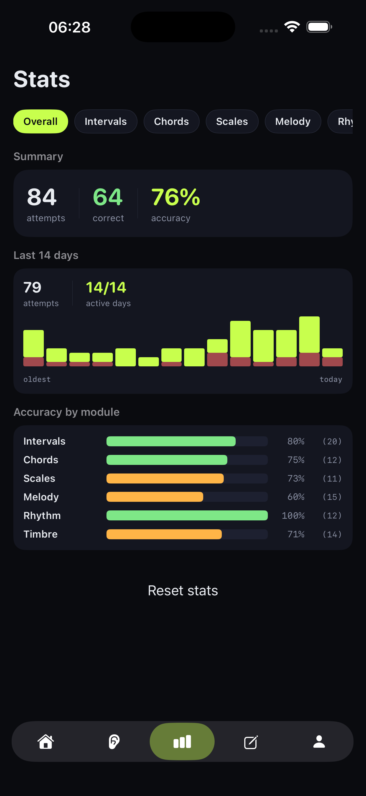
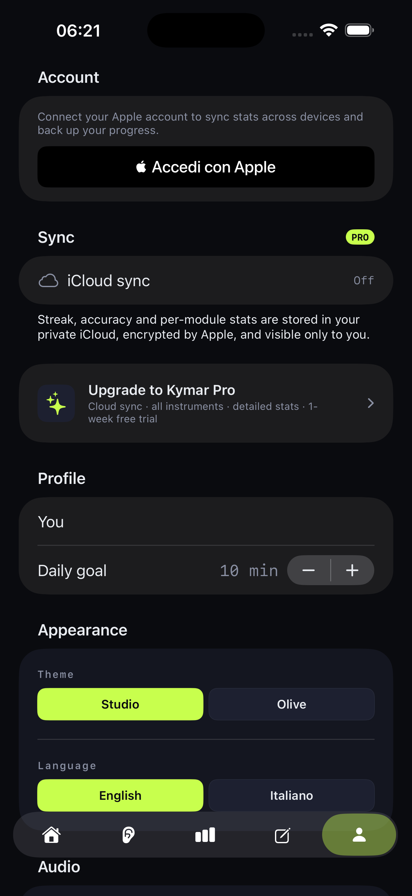

Daily drills that turn passive listening into active recognition. Intervals, chords, scales, rhythm — and the field-guide science behind how you actually hear them.





A trainer designed by someone who wanted one. No gamified XP, no fake levels — just deliberate practice mapped to musical concepts.
Intervals · Chords · Progressions · Scales · Melody · Rhythm · Timbre. Each one starts simple and unlocks complexity as you go.
The science of how the ear works — interactive diagrams of the cochlea, harmonics, beats, temperament, and 14 more chapters.
Misses re-surface on a Leitner-style schedule. The weak-spots card on Home shows exactly what to drill today.
Plug any USB / Bluetooth / network MIDI keyboard. Your answers feel like playing, not tapping.
Per-module accuracy, confusion matrices, 14-day activity — no inflated "you're amazing!" celebrations.
Everything lives on your device. Audio is never recorded. iCloud sync is opt-in and uses your own private container.